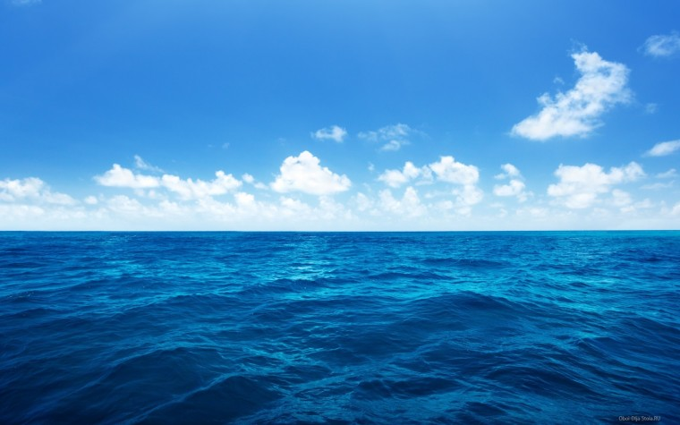

ФИО:
Антон Александрович Зарубин
Список любимых дисциплин:
Мировые информационные ресурсы
Мировые информационные ресурсы
Мировые информационные ресурсы
Три любимых произведения:
"Пикник на обочине"
братьев Стругацких
Сага "Песнь льда и пламени"
Дж.Р.Р. Мартина
"Интерстеллар"
Кристофера Нолана
Счастье:
